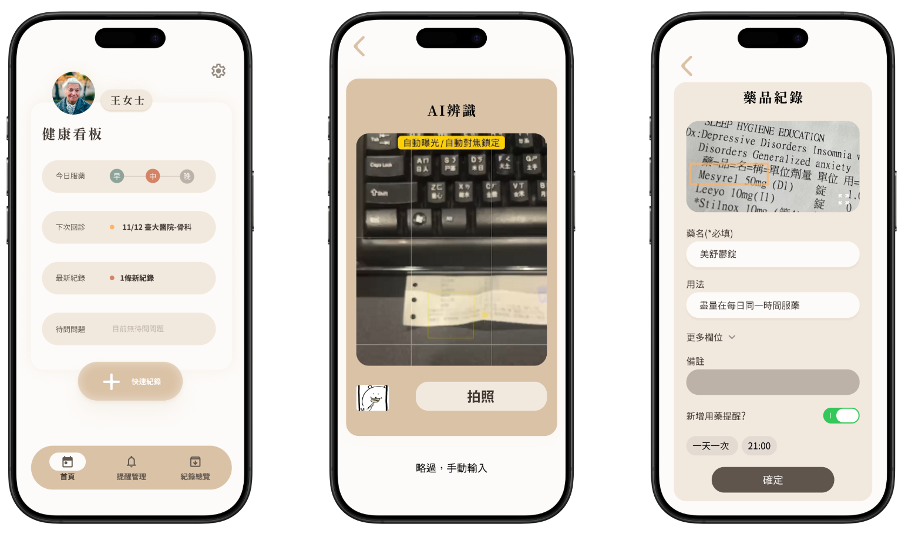
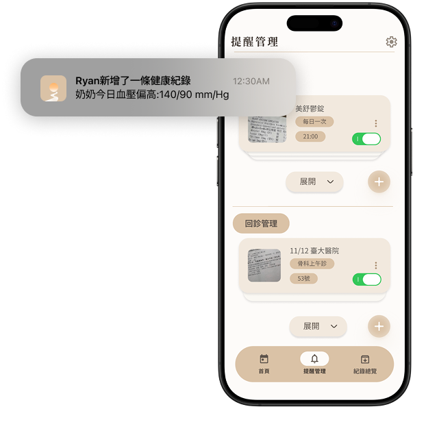
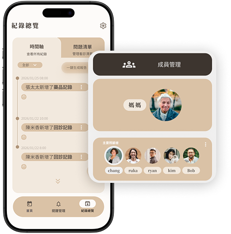

“不僅是記錄，更是全家人的安心橋樑”
台灣首款專為家庭照護設計的輕量化協作工具，讓用藥、回診、紀錄不再手忙腳亂。
Free Download
你是否也曾面臨...😫
回診用藥繁多
重複溝通交接好疲倦
忘記問醫生問題
照顧其實可以很簡單!☺️
拍照即記錄
家人共享即時資訊
隨時準備好問題清單
《拍照即病歷的極簡守護》
傳統病歷紀錄繁瑣，往往讓照顧者半途而廢。
carelog導入 AI OCR 辨識技術，讓「拍照」成為紀錄的唯一動作，
使用者只需拍攝藥單或檢驗報告，系統便會自動抓取關鍵字。我們極度簡化輸入流程，讓最即時的病況能以最直覺的方式轉化為數位資產。

《自動推播遠端也能看見的安心》
透過系統內建的自動化排程機制，長輩的用藥進度與健康紀錄將即時同步發送推播通知。即使身在職場或遠方，家人也能透過手機確認照護任務已準時達成。這種「無聲的默契」不僅消除了資訊落差，更建立了長輩與子女間的信任橋樑


《打破照顧孤島讓全家人的愛資訊同步》
長期照護不應是一個人的重擔。
carelog建立了一個專屬的家庭共享環境，透過邀請機制，讓配偶、子女都能加入同一看板。所有的藥品、醫囑、健康紀錄，都會以時間軸形式呈現，確保每位家庭成員在輪替照顧時，能有無縫接軌的資訊背景，真正實現「一人照護，全家共感」。
《一鍵匯整零散記錄看診更效率》
在有限的門診時間內，照顧者往往難以精確描述病況變化。
carelog內建 Client-side PDF 生成引擎，能將散落在生活中的瑣碎紀錄，自動整理成結構化的「問診專用報告」。無論是血壓趨勢、用藥反應或突發症狀，皆能以專業圖表呈現，協助醫師在最短時間內精準決策，將零散的愛轉化為專業的醫療依據。